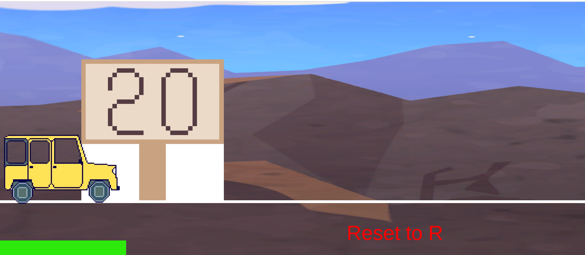
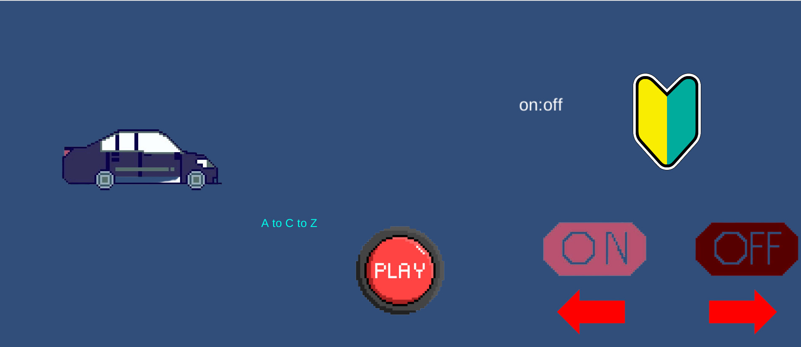
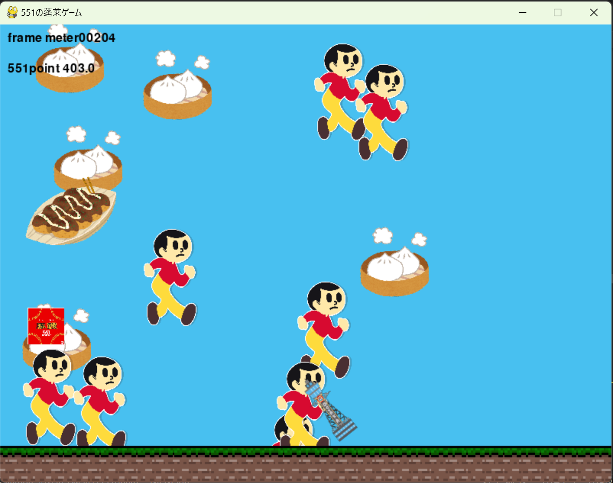
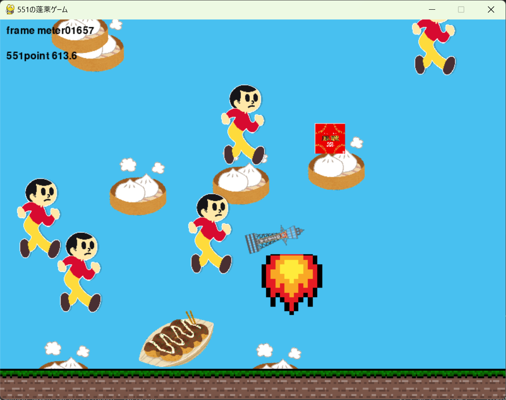
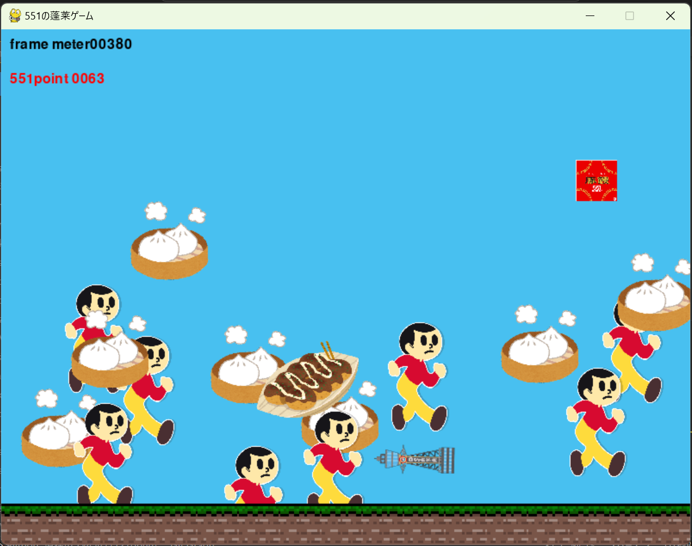

Kazushi's portfolio
Profile
大阪公立大学工業専門高等学校、知能情報コース所属の高専2年生。
クラブはプログラミング研究会に所属。
Skills
プログラム言語
- C++ ...プログラミング研究会で習い、パソコン甲子園などで使用した
- Python ...中学生の頃からプログラミング教室で習い、高専の授業でも学習した
- Adurino ...高専のマイクロコンピュータと工学基礎実習で学習した
- Scratch ...小中学生の時に自主的に学習し、高専でも少し学んだ
ソフトウェア
- Ambient ...Iot-DX実験で使用している
- Git/GitHub ...プログラミング1で履修し、このポートフォリオを作るのに使用した
- VSCode ...プログラミング1で履修し、pythonやjupyter環境を使用するときによく使う
- ArduinoIDE ...Arduinoを使用する際に使った
- Deeds-DCS ...論理回路1の授業で現在進行形で使っている
- MakeCode for micro:bit ...総合工学システム実習やIot-DX実験の時にmicro:bitを使うために使用した
- Tinkercad ...総合工学システム実習の時に使い、製図をした
作品
このゲームはデュエルマスターズというカードゲームの赤単我我我というデッキを使って一人回しで3ターン以内に決着をつけることができるかをPythonを使用して再現したものである。
高専祭(2年時)
チキンレース ...高専祭で6人班で作成したゲーム
これらの車や看板、オンオフボタンなどを作成し、主にデザインを担当した。
また、タイトル画面をAIを使って作成した。



プログラミング1:課題8
このゲームは自キャラクター(通天閣)を操作して落ちてくる豚まんを食べ、とびたくんやたこ焼きから避けて
通天閣を一番上まで飛ばすとクリアというゲームとなっている。
このゲームを作った理由は冬休み前に飛んで埼玉～～琵琶湖より愛をこめてを見に行き、
関西へのいじりがとても面白くこの映画をネタにしてゲームを作りたいと思ったからだ。
操作方法:Aキーで左に、Dキーで右に通天閣を移動させる。
ルール:551 point が0になると強制終了になる。通天閣が画面の一番上まで飛ぶと、ゲームクリアになる。
キャラクター説明
- 通天閣 ...操作するキャラクター。回転しながら移動する
- 豚まん ...通天閣が豚まんに触れ続ける限りと551 point が1.5たまり続ける
- とびたくん ...敵キャラクター。とびたくんに触れ続ける限りと551 point が1減り続ける
- たこ焼き ...敵キャラクター。一回でも触れると551 point が0になり、ゲームオーバーになる。
- 551の蓬莱 ...落下し終わるまでに一回でも触れたら551 pointが55.1追加される
- 火 ...通天閣が飛ぶときの演出要員
- 土 ...背景の地面を作る要員

ゲーム画面はこのようになっている

frame meter が1500を超えると通天閣が飛び始める

551 point が100を切り出すとこの文字が赤くなる